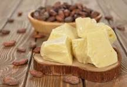
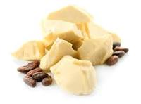
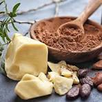
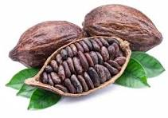
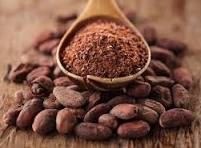
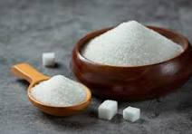
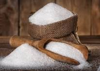
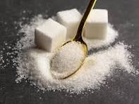
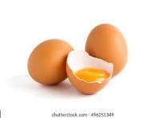
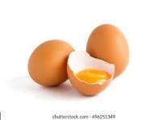

-
SOME INGRIDIENT OF OUR CHOCOLATE
1.MILK
Whole cow's milk contains about 87% water.
The remaining 13% contains protein, fat, carbohydrates, vitamins, and minerals.
Processing techniques remove fat to produce lower fat varieties: “reduced fat” contains 2% milkfat, “lowfat” contains 1% milkfat, and “nonfat” or “skim” has virtually no milkfat.

2.COCOA BUTTER
The main constituent of cocoa butter is the triglyceride (fat) derived from palmitic acid, oleic acid, and stearic acid.
  4. COCOA BEANS
Cocoa beans' composition Each bean is made of about 50% of a fat called cocoa butter.
 
The beans are 20% protein and also contain water, as well as a large amount of nutrients such as theobromine and vitamins5.SUGAR
  6.EGG
Eggs are composed of mostly water, with proteins, fats, and minerals. 
